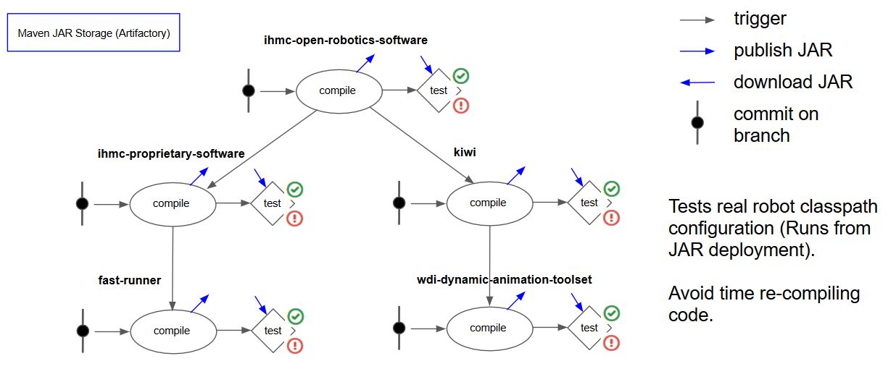

A chronological showcase of projects
Still under development, I am working on IHMC's next iteration of autonomous door traversal. I have integrated Bullet realtime physics and OpenCV based perception of ArUco markers in order to provide feedback for the behavior - even in simulation. The behavior is "coactive," that is, it is adhering to the design principles: observability, predictability, and directability.
By using a new rapid planar regions algorithm with GPU acceleration, and with the team at IHMC, I developed a walking behavior that actively perceives the terrain while it is walking. This is a step beyond prior implementations that required long static sensing times and were not robust to changes in terrain.
Using the Valve Index VR headset, a Realsense L515, and an Ouster lidar, I developed a VR interface that allowed the user to place and execute footsteps over rough terrain for IHMC's DRC Atlas humanoid robot.
I led the team and developed a behavior architecture to reach for high levels of autonomy in a demo scenario for disposing of a mock pipe bomb, which required the robot accomplishing a sequence of difficult tasks: traversing rough terrain, pull door, debris clearance, push door, stairs, and manipulation of the bomb.
By combining the strengths of robots and humans, autonomous, fast, behaviors are under development. As the robot's autonomous capabilities increase, behaviors and their user interfaces can take over work from the human. In the video below, the operator selects a series of waypoints and the robot is left to accomplish the task, despite the rough terrain and control difficulty of bipedalism.
In the videos below, a humanoid robot is teleoperated with a VR system. The robot's arm movements track the human's in order to accomplish manipulation tasks.
A complex build configuration using Gradle was developed to allow IHMC Robot Lab's 2 million lines of software to scale. The lab needed a way to hold open, proprietary, and standalone software projects in separate repositories while retaining the option to build from binary or source, interchangably, with ease. The configuration also allows for classpath isolation across build servers and IntelliJ and Eclipse IDEs.
Project website: https://github.com/ihmcrobotics/ihmc-build
A continuous integration pipeline is designed and maintained for the IHMC Robot Lab to run around 5000 unit tests ranging from low level math and geometry libraries to full scale humanoid behavior simulations.
A planning module was developed to avoid tripping on known obstacles while executing a footstep plan. The module iterates on a simulation of the collision model arcing through the footstep trajectory, detecting a collision and expanding the trajectory and trying again until there is no collision. The output is the two trajectory waypoints supported by the walking controller.
IHMC placed 2nd in the DARPA Robotics Challenge Finals in 2015. A 30 DoF hydraulic humanoid robot was piloted through an obstacle course from a warehouse a mile away with obstructed communication. The robot was able to accomplish all 8 tasks in under 1 hour on the second run. (https://en.wikipedia.org/wiki/DARPA_Robotics_Challenge)
This vehicle was designed and built by Duncan Calvert, Madison Fortenberry, and Kevin Van Landingham, beginning in August 2013 and ending in June 2014. The vehicle was designed according to strict specifications outlined by the 2014 International Ground Vehicle Competition official rules.(www.igvc.org)
The main features of the vehicle hardware include 18" drive wheels, 4 cameras (2 side-facing wide angle), 5 ultrasonic sensors, 5 ARM-based system-on-chip embedded computers, 1 real-time ARM-based microcontroller, and power and safety equipment. The cost of the project totaled roughly $3000, excluding the Hokuyo laser scanner, purchased previously for ~$4000.
The UWF Unmanned Ground Vehicle in its final configuration.
3D simulation in jMonkey Engine 3 using Java. Uses actual design models exported from Autodesk Inventor. Transmits a 270 degree sensor view via 780 data points at 10 Hz to a monitor utility.
The two previous design iterations. We first tried to implement 4-wheel independent suspension, but this design turned out to be too costly in time and money. Secondly, we modeled and contructed a four wheel drive rigid body system, which, due to friction and the body geometry, was unable to pivot reliably. The vehicle was modeled in Autodesk Inventor.
RILE is an educational robotics company that currently specializes in middle school level physics lessons.www.rileinc.com
The linear-motion-teaching robots use a PID algorithm to eliminate lateral motion as they assume their targeted velocity and acceleration vectors. They utilize ultrasonic rangefinders to record motion and avoid collisions.
The images above show an early prototype of the latest version of RILE robots, internally codenamed "Galileo". This robot uses 3D printed parts for its structure.
The images above show the first deployable prototype for RILE Inc., based on the VEX robotics platform. These robots run C++ code on an ARM9 processor runnning embedded linux. The robot uses the libquerk API developed at Carnegie Mellon University.